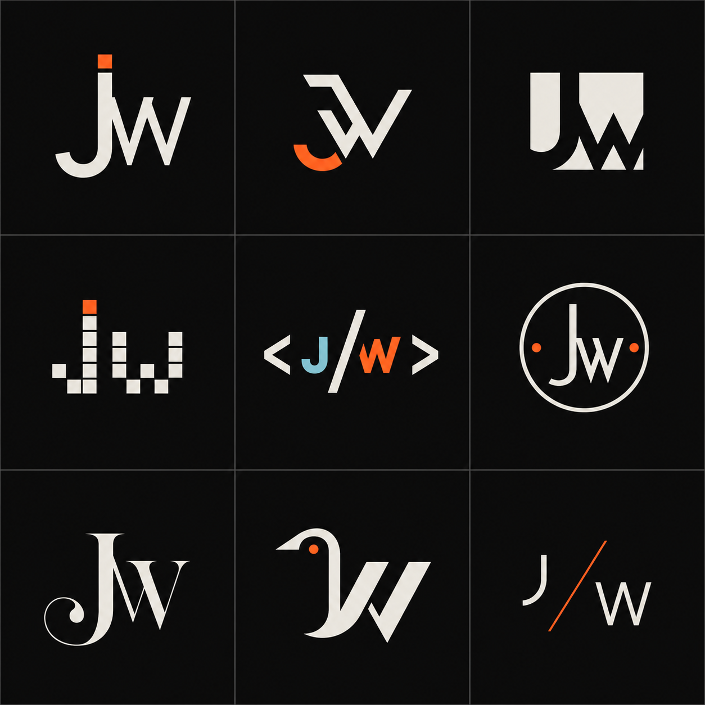
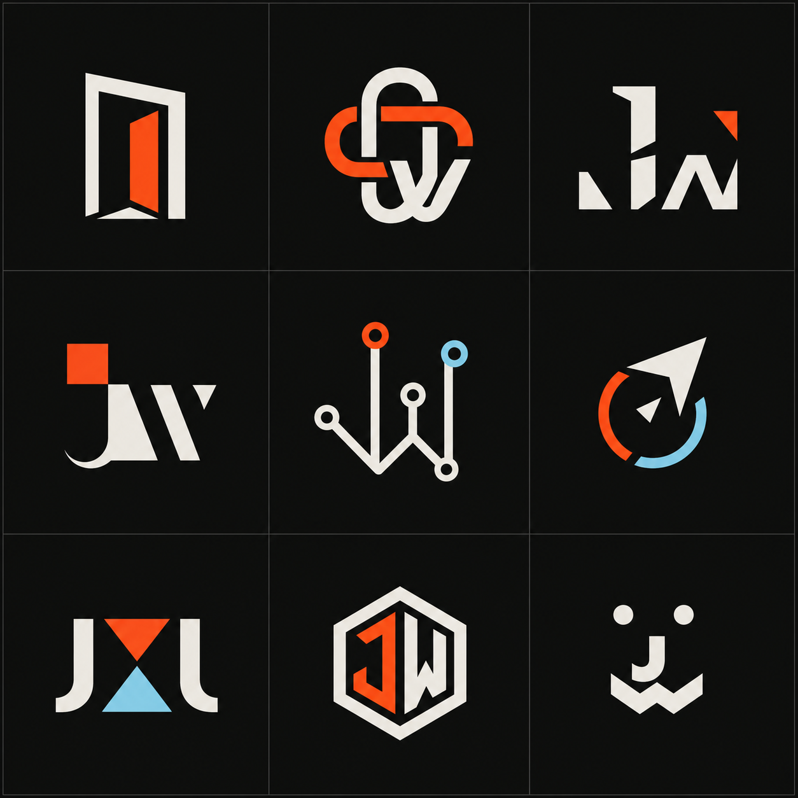
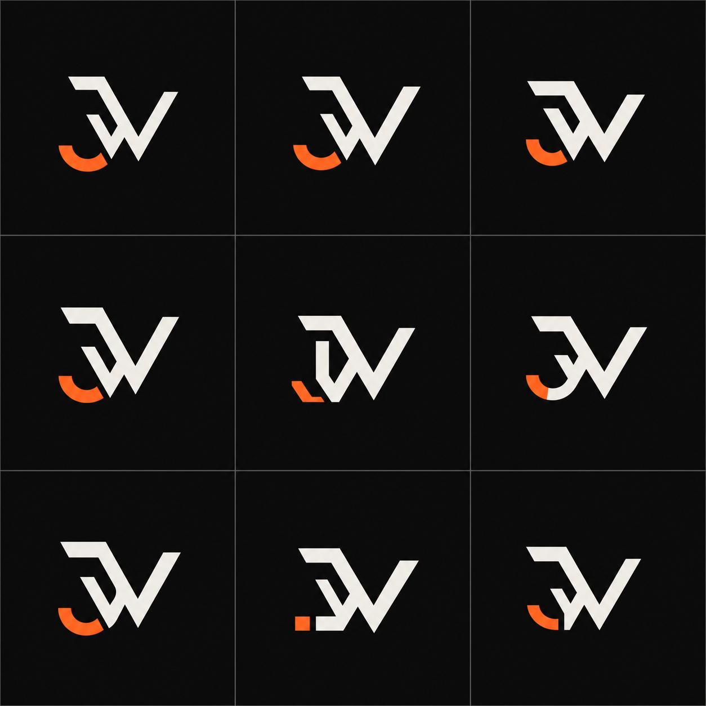

AI-generated identity study / Navbar mark
Twenty-seven ways to sign the work
Option 08 is active in the navbar for now. Compare it with nine completely new directions and nine focused variations of option 02 below.
Original exploration / 01–09
The first nine
08 is active now. The chosen bird-like monogram is currently fitted to the portfolio navbar.

New exploration / 10–18
Nine new directions
Fresh structures and symbols, deliberately avoiding the visual ideas used in the original sheet.

Focused exploration / Option 02
Nine variations of 02
The angular interlocked monogram, refined through different weights, joins, hooks, proportions, and negative space.
